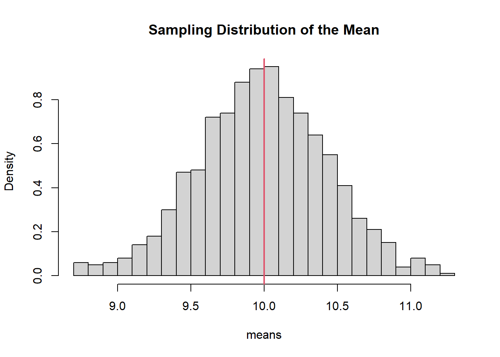
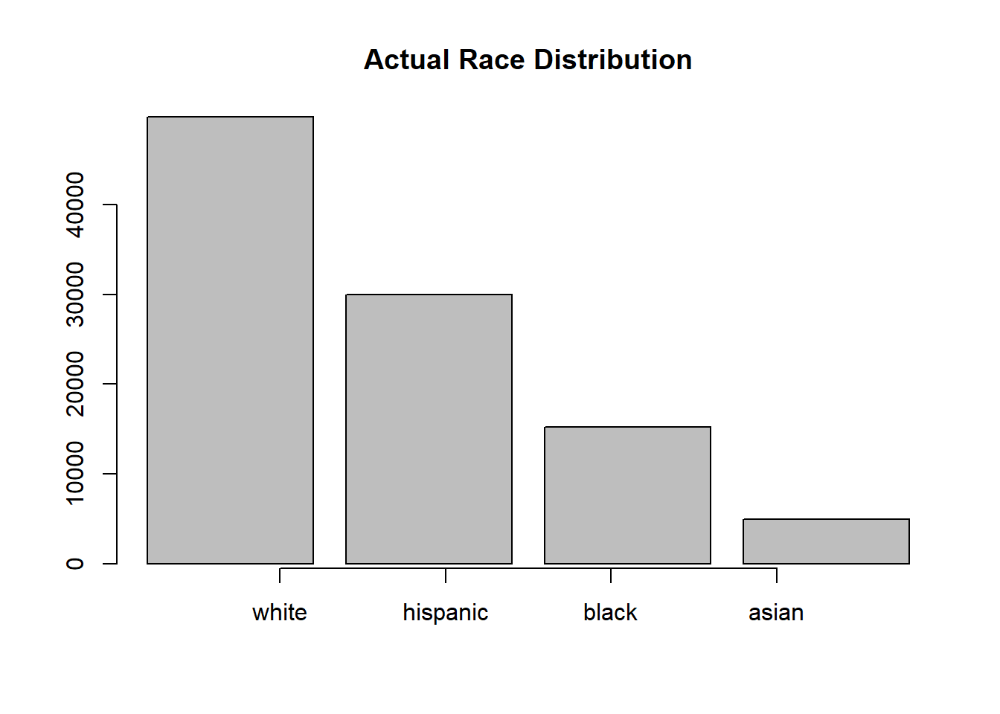
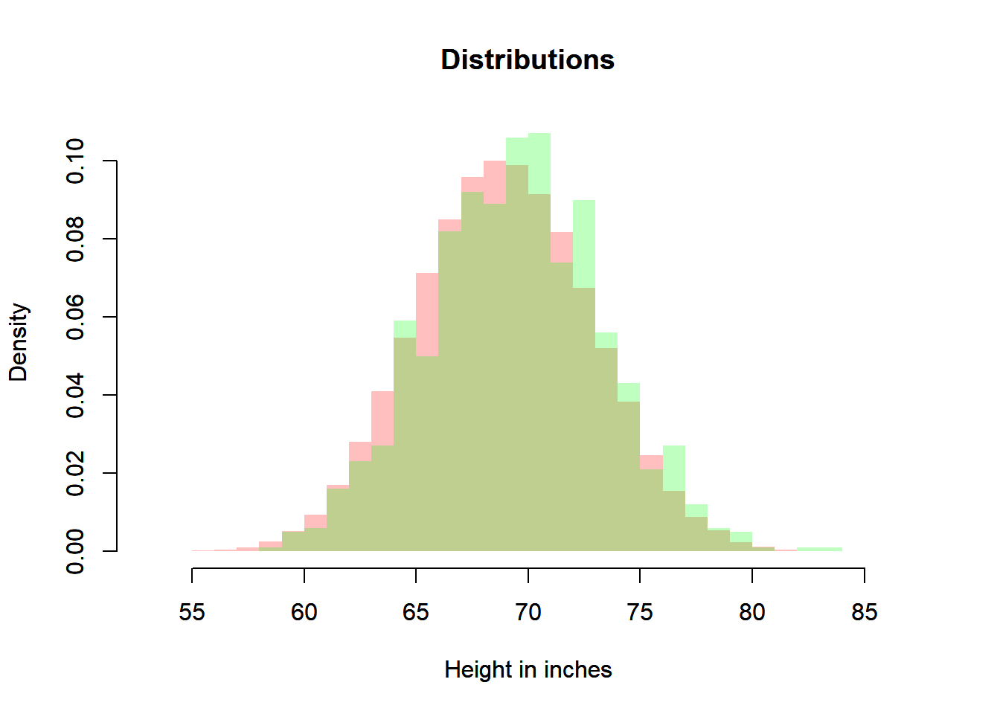
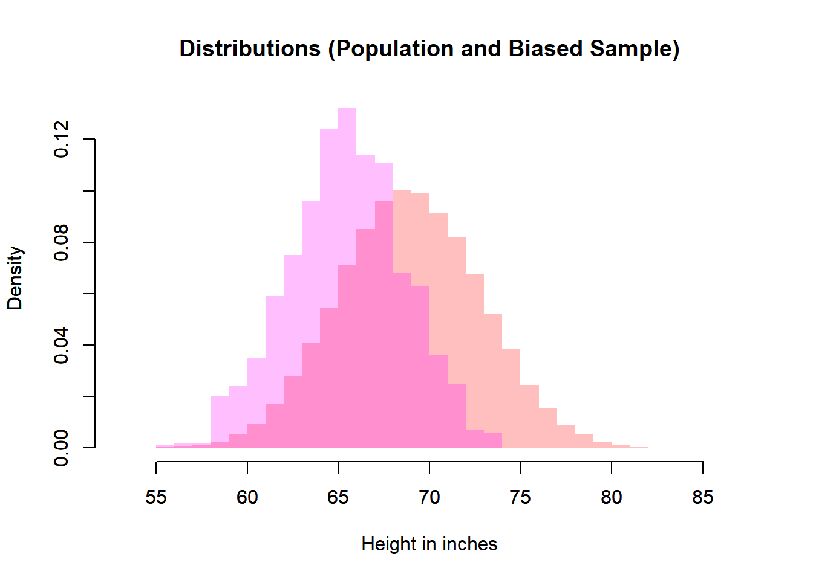

6 From Probability to Statistics
Probability provides a mathematical language for describing uncertainty. Statistics uses that language to learn from data.
The transition from probability to statistics occurs when we reinterpret probability models as descriptions of populations and data-generating processes. Instead of asking:
“What is the probability of an event?”
we begin asking:
“What can we learn about an unknown population from a random sample?”
This shift is conceptual but fundamental.
6.1 Population as a Distribution
A coherent way to unify probability and statistics is to model the population as a probability distribution.
In this framework:
- The population is not just a collection of numbers.
- It is a data-generating mechanism governed by a probability distribution.
- Observations are random outcomes generated by that mechanism.
Formally, we think of a population as a distribution \(F\) with parameters \(\theta\).
Each observation is a random variable:
\[ X \sim F. \]
A sample of size \(n\) is:
\[ X_1, X_2, \dots, X_n \sim F. \]
A statistic is a function of these random variables:
\[ T = g(X_1, \dots, X_n). \]
The sampling distribution describes how \(T\) behaves across repeated samples.
6.1.1 The Structural Framework
We summarize the statistical framework as follows:
- The population is modeled by a probability distribution with parameters.
- Samples are random draws from this distribution.
- Statistics are computed from samples.
- Sampling distributions describe the variability of statistics.
- Inference uses sampling distributions to learn about parameters.
This framework explains:
- Why statistics vary from sample to sample.
- Why uncertainty is unavoidable.
- Why larger samples produce more stable conclusions.
6.2 Examples
6.2.1 Example 1: A Normal Population
Suppose a population is modeled as:
\[ X \sim N(\mu = 10, \sigma = 2). \]
The parameter \(\mu = 10\) is fixed but unknown in practice. A sample mean \(\bar{X}\) will vary across samples.
set.seed(123)
means <- replicate(1000, mean(rnorm(20, mean = 10, sd = 2)))
hist(means, probability = TRUE, breaks = 30,
main = "Sampling Distribution of the Mean")
abline(v = 10, col = 2, lwd = 2)
The vertical line marks the population mean. The histogram shows how sample means fluctuate around it.

6.3 What Does Bias Mean Under This Framework?
Bias refers to systematic deviation from a parameter.
For an estimator \(\hat{\theta}\):
\[ \text{Bias}(\hat{\theta}) = E[\hat{\theta}] - \theta. \]
An estimator is unbiased if:
\[ E[\hat{\theta}] = \theta. \]
Example: The sample mean.
## [1] 5.003572The average of the sample means is very close to the true mean. The sample mean is unbiased.
Bias is therefore defined in terms of the sampling distribution, not a single dataset.
6.4 Role of Independence
Independence is foundational because it simplifies probability structure.
If \(X_1, \dots, X_n\) are independent:
- Joint probabilities factorize.
- Variances add cleanly.
- Limit theorems apply.
- Sampling distributions behave predictably.
6.4.2 Deterministic Sequence (No Randomness)
There is no randomness here. No sampling distribution exists.

6.5 Sampling as Drawing Random Variables
We model the population as a distribution \(F\).
A sample of size \(n\):
\[ X_1, X_2, \dots, X_n \sim F. \]
6.6 Parameters and Statistics
A parameter describes a population distribution.
Examples:
- \(\mu\) (mean)
- \(\sigma^2\) (variance)
- \(p\) (proportion)
- \(\lambda\) (Poisson rate)
A statistic is computed from a sample.
Examples:
- \(\bar{X}\)
- \(S^2\)
- \(\hat{p}\)
Parameters are fixed (but unknown). Statistics are random variables.
6.7 Example: Random Sample as Simple Random Sampling
Let’s illustrate the comparison between Simple Random Sampling and a Random Sample with an example about adult males heights. We have a data set of an imaginary country with race information.
# Set seed
set.seed(2026)
# Generation the Population
# Population
pop <- 100000
# Races
racNam <- c("white",
"hispanic",
"black",
"asian")
# Height Data by Race
heiRacMea <- c(71, 67, 70, 66)
heiRacSd <- c(3.5, 3.2, 3.4, 3.1)
# Race Sampling
rac <- sample(x = racNam,
size = pop,
replace = TRUE,
prob = c(0.50, 0.30, 0.15, 0.05))
# Number of Peoble by Race
numPeoRac <- c(sum(rac == "white"),
sum(rac == "hispanic"),
sum(rac == "black"),
sum(rac == "asian"))
# Height Sampling
hei <- numeric(length = pop)
hei[rac == "white"] <- round(rnorm(n = numPeoRac[1], mean = heiRacMea[1], sd = heiRacSd[1]))
hei[rac == "hispanic"] <- round(rnorm(n = numPeoRac[2], mean = heiRacMea[2], sd = heiRacSd[2]))
hei[rac == "black"] <- round(rnorm(n = numPeoRac[3], mean = heiRacMea[3], sd = heiRacSd[3]))
hei[rac == "asian"] <- round(rnorm(n = numPeoRac[4], mean = heiRacMea[4], sd = heiRacSd[4]))
# Plot Race
barplot(numPeoRac,
main = "Actual Race Distribution")
axis(side = 1, at = 1:4, labels = racNam)
# Height Population Distribution
heiDisPop <- hist(hei,
breaks = 25,
main = "Actual Height Population Distribution",
xlab = "Height in inches",
freq = FALSE)
# Simple Random Sampling
samSiz <- 1000
simRanSam <- sample(x = hei, size = samSiz, replace = FALSE)
# Histogram Sample
heiDisSimRanSam <- hist(simRanSam,
breaks = 25,
main = "Simple Random Sampling Distribution",
xlab = "Height in inches",
freq = FALSE)
# Comparison
xmin <- min(heiDisPop$breaks, heiDisSimRanSam$breaks)
xmax <- max(heiDisPop$breaks, heiDisSimRanSam$breaks)
ymin <- min(heiDisPop$density, heiDisSimRanSam$density)
ymax <- max(heiDisPop$density, heiDisSimRanSam$density)
plot(heiDisPop,
xlab = "Height in inches",
main = "Distributions",
freq = FALSE,
border = NA,
col = rgb(1, 0, 0, 0.25),
xlim = c(xmin, xmax),
ylim = c(0, ymax))
par(new=TRUE)
plot(heiDisSimRanSam,
xlab = "Height in inches",
main = "Distributions",
freq = FALSE,
border = NA,
col = rgb(0, 0, 1, 0.25),
xlim = c(xmin, xmax),
ylim = c(0, ymax))
# Random Sample (from a Theoretical Probability Distribution)
meaPop <- mean(hei)
stdPop <- sd(hei)
ranSam <- rnorm(n = samSiz, mean = meaPop, sd = stdPop)
# Histogram Random Sample
heiDisRanSam <- hist(ranSam,
breaks = 25,
main = "Random Sample Distribution",
xlab = "Height in inches",
freq = FALSE)
# Comparison
xmin <- min(heiDisPop$breaks, heiDisSimRanSam$breaks, heiDisRanSam$breaks)
xmax <- max(heiDisPop$breaks, heiDisSimRanSam$breaks, heiDisRanSam$breaks)
ymin <- min(heiDisPop$density, heiDisSimRanSam$density, heiDisRanSam$density)
ymax <- max(heiDisPop$density, heiDisSimRanSam$density, heiDisRanSam$density)
plot(heiDisPop,
xlab = "Height in inches",
main = "Distributions",
freq = FALSE,
border = NA,
col = rgb(1, 0, 0, 0.25),
xlim = c(xmin, xmax),
ylim = c(0, ymax))
par(new=TRUE)
plot(heiDisRanSam,
xlab = "Height in inches",
main = "Distributions",
freq = FALSE,
border = NA,
col = rgb(0, 1, 0, 0.25),
xlim = c(xmin, xmax),
ylim = c(0, ymax))
# Biased Sample
biaSam <- sample(x = hei[rac == "asian"], size = samSiz, replace = FALSE)
# Histogram Biased Sample
heiDisBiaSam <- hist(biaSam,
breaks = 25,
main = "Biased Sample Distribution",
xlab = "Height in inches",
freq = FALSE)
# Comparison
xmin <- min(heiDisPop$breaks, heiDisSimRanSam$breaks, heiDisRanSam$breaks, heiDisBiaSam$breaks)
xmax <- max(heiDisPop$breaks, heiDisSimRanSam$breaks, heiDisRanSam$breaks, heiDisBiaSam$breaks)
ymin <- min(heiDisPop$density, heiDisSimRanSam$density, heiDisRanSam$density, heiDisBiaSam$density)
ymax <- max(heiDisPop$density, heiDisSimRanSam$density, heiDisRanSam$density, heiDisBiaSam$density)
# Biased Sample and Population
plot(heiDisPop,
xlab = "Height in inches",
main = "Distributions (Population and Biased Sample)",
freq = FALSE,
border = NA,
col = rgb(1, 0, 0, 0.25),
xlim = c(xmin, xmax),
ylim = c(0, ymax))
par(new=TRUE)
plot(heiDisBiaSam,
freq = FALSE,
main = "",
xlab = "",
border = NA,
col = rgb(1, 0, 1, 0.25),
xlim = c(xmin, xmax),
ylim = c(0, ymax))
# Biased Sample and Simple Random Sample
plot(heiDisSimRanSam,
xlab = "Height in inches",
main = "Distributions (SRS and Biased Sample)",
freq = FALSE,
border = NA,
col = rgb(0, 0, 1, 0.25),
xlim = c(xmin, xmax),
ylim = c(0, ymax))
par(new=TRUE)
plot(heiDisBiaSam,
freq = FALSE,
main = "",
xlab = "",
border = NA,
col = rgb(1, 0, 1, 0.25),
xlim = c(xmin, xmax),
ylim = c(0, ymax))
# Biased Sample and Simple Random Sample
plot(heiDisRanSam,
xlab = "Height in inches",
main = "Distributions (Random Sample and Biased Sample)",
freq = FALSE,
border = NA,
col = rgb(0, 1, 0, 0.25),
xlim = c(xmin, xmax),
ylim = c(0, ymax))
par(new=TRUE)
plot(heiDisBiaSam,
freq = FALSE,
main = "",
xlab = "",
border = NA,
col = rgb(1, 0, 1, 0.25),
xlim = c(xmin, xmax),
ylim = c(0, ymax))
6.8 Sampling Distribution of a Mean
Let \(X_1,\dots,X_n\) be i.i.d. with:
\[ E[X_i] = \mu, \quad \mathbb{V}(X_i) = \sigma^2. \]
The sample mean:
\[ \bar{X} = \frac{1}{n}\sum_{i=1}^n X_i. \]
6.8.1 Fundamental Properties
\[ \mathbb{E}[\bar{X}] = \mu \]
\[ \mathbb{V}(\bar{X}) = \frac{\sigma^2}{n} \]
Standard error:
\[ \frac{\sigma}{\sqrt{n}}. \]
Averaging reduces variability.
6.8.2 Small vs Large Sample Size
means_small <- replicate(1000, mean(rnorm(5)))
means_large <- replicate(1000, mean(rnorm(50)))
par(mfrow=c(1,2))
hist(means_small, probability=TRUE, main="n=5")
hist(means_large, probability=TRUE, main="n=50")
par(mfrow=c(1,1))Larger samples → smaller variance.
6.8.3 Big vs Small Variance
means1 <- replicate(1000, mean(rnorm(20, sd=1)))
means2 <- replicate(1000, mean(rnorm(20, sd=5)))
par(mfrow=c(1,2))
hist(means1, probability=TRUE, main="sd=1")
hist(means2, probability=TRUE, main="sd=5")
par(mfrow=c(1,1))Larger population variance → wider sampling distribution.
6.9 Shape of the Sampling Distribution
If the population is normal:
- \(\bar{X}\) is exactly normal.
If not:
- The Central Limit Theorem implies approximate normality for large \(n\).
6.10 Sampling Distribution of a Variance
The sample variance:
\[ S^2 = \frac{1}{n-1}\sum (X_i-\bar{X})^2. \]
It is also a random variable.
If the population is normal:
\[ \frac{(n-1)S^2}{\sigma^2} \]
follows a chi-squared distribution with \(n-1\) degrees of freedom.
6.11 Concentration with Larger Samples
As \(n\) increases, statistics stabilize.

The distribution tightens around the true mean.
6.12 Central Insight
Statistics are random variables.
A statistic has:
- An expectation
- A variance
- A distribution
Statistical inference studies these sampling distributions to:
- Estimate parameters
- Quantify uncertainty
- Construct confidence intervals
- Perform hypothesis tests
Probability describes randomness. Statistics uses that description to learn from data.
This is the conceptual bridge from probability to statistics.